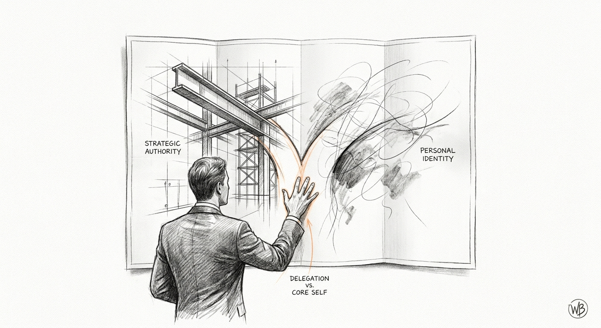

Drafted: 2026-07-13
OS Pillar: Strategy OS
Quarterly Theme: Systems That Serve
Subject: Your title is rented. Your character is not.
Preheader: The line most founders never draw, and why succession keeps stalling because of it.
Insight summary: Founder-CEOs postpone succession because they conflate their personal identity with the company's strategic direction, creating a hidden operating risk that boards and leadership teams fail to address until the transition becomes urgent.
This week: the systems around the person at the top are getting more capable, and the question of what only the founder can do keeps getting harder to answer.
The most important document in your company is not written down. It is the private catalog of decisions you keep answering because nobody else can. TIAA CEO Thasunda Duckett recently drew a distinction most founders have never sat with: "I rent my title. I own my character." The title carries authority the board can revoke. Character stays. For a founder who built the company, the confusion between the two is the reason succession keeps getting postponed. What you own and what you hold are not the same thing.
You have thought about succession. Maybe you have named a candidate. Maybe you have not. Either way, the timeline keeps moving without landing.
The reason is not what you think. It is not that your successor is not ready. It is not that the market is not right. It is that you have not yet distinguished two things inside yourself. There is the strategic authority you hold, which can be delegated. There is the existential purpose the company carries for you, which cannot. The two have fused.
Every time you sit at the head of the table and answer a question your CEO should field, you are drawing from the fused account. Every time you close a deal on the strength of your name rather than your team's capability, you are drawing from it again. It feels like leadership. It is often identity maintenance.
This is the boundary TIAA CEO Thasunda Duckett was pointing at when she said, "I rent my title. I own my character." For a hired executive, the line is administrative. For a founder, it is the hardest interior work of the second half of the company. Because you built this, the title never felt rented. It felt earned, and therefore permanent, and therefore fused with who you are.
The Two Lists
Strategy OS treats this as a definitional problem before it is a succession problem. Before any timeline is announced, the founder writes two lists.
List one: the strategic authority you hold. Capital allocation above a threshold. Senior hires. Category bets. These are transferable. They can be structured, delegated, and tested.
List two: the existential purpose the company carries for you. The standard you set. The stewardship you carry. The character the business must protect. This is not transferable. It stays with you regardless of who holds the title.
The work lives in the gap between the two. In most founder-led companies, the daily habit of deciding, and being seen to decide, keeps the lists fused. Items that belong to list one quietly migrate into list two. Naming the specific moments this happened is how awareness begins. Without that awareness, no candidate is ever the right one, because the seat has never been defined.
This week
Before Friday, write down the last three board meetings, calls, or client interactions where you spoke when a named successor should have. For each one, ask a single question: was that strategic authority, which is delegable, or existential purpose, which is yours to hold? Most will land in list one. That list is the first draft of a document you have not yet written.
Northwell Health, based in New Hyde Park, New York, completed its acquisition of Nuvance Health. The combined nonprofit system now spans 28 hospitals, more than 100,000 employees, and $23.1 billion in 2025 operating revenue. John D'Angelo became president and CEO in October. Many senior executives announced their retirement soon after. He has been replenishing his leadership team while also integrating the acquisition.
For the mid-market operator, the reading of this shift is uncomfortable. A leadership bench that empties at the same moment a top seat turns over is not an accident of timing. In our experience, long-tenured executives often calibrate their own exits to the transition of the founder or CEO. Their loyalty was to the individual, not to the institution. The lesson for owners in the $5M to $100M range is that succession is not a single seat. It is a bench. If the top seat is fused with the identity of one person, the bench beneath it usually is too.
Loom - A screen and video recording tool for capturing the reasoning behind your recurring decisions. It matters because judgment that lives only in your head cannot be transferred by written documents alone. Your successor needs to see how you think, not just what you decided. Record five minutes of yourself walking through a live decision this week. Find it at loom.com.
Watch for this week: the moments in a meeting where you answer a question your named successor should have fielded. Count them. Do not correct them in the moment. Just track how many times the decision reflex overrode the succession plan you say you are building. The number itself is the diagnostic. If it is higher than zero, the seat you plan to hand off has not yet been defined.
If something in this issue landed, reply - I read every response.
If this is useful to someone in your network, forward it - it takes ten seconds and it's the highest compliment.
When you're ready to work together directly, here is how we start: [link]
Draft generated by the pipeline. Review and edit before sending.